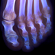

|

|  | |||
| teem | / | nrrd | / | demo |
Inspecting volvis.org datasets |
Its helpful to set an environment variable for the base URL that the datasets are coming from:
Now, for each of the datasets, download the data, and make a detached nrrd header. The "-e gzip" indicates that the data is gzip compressed. Because the data is only unsigned char, byte ordering is not an issue, and the "-en" (endianness) option is not needed. Setting the content field ("-c") is so that subsequent nrrd operations can update the content field according to the actions taken. The use of key/value pairs ("-kv") requires the use of teem version 1.6 or greater.setenv DATAPATH http://www.gris.uni-tuebingen.de/areas/scivis/volren/datasets/data
curl ${DATAPATH}/aneurism.raw.gz > aneurism.raw.gz
curl ${DATAPATH}/BostonTeapot.raw.gz > BostonTeapot.raw.gz
curl ${DATAPATH}/bonsai.raw.gz > bonsai.raw.gz
curl ${DATAPATH}/foot.raw.gz > foot.raw.gz
unu make -h -i ./aneurism.raw.gz -c aneurism -t uchar -e gzip \
-s 256 256 256 -sp 1 1 1 \
-kv "source URL:=${DATAPATH}/aneurism.raw.gz" \
"courtesy:=Philips Research, Hamburg, Germany" \
-o aneurism.nhdr
unu make -h -i ./BostonTeapot.raw.gz -c BostonTeapot -t uchar -e gzip \
-s 256 256 178 -sp 1 1 1 \
-kv "source URL:=${DATAPATH}/BostonTeapot.raw.gz" \
"courtesy:=Terarecon Inc, MERL, Brigham and Women's Hospital" \
-o BostonTeapot.nhdr
unu make -h -i ./bonsai.raw.gz -c bonsai -t uchar -e gzip \
-s 256 256 256 -sp 1 1 1 \
-kv "source URL:=${DATAPATH}/bonsai.raw.gz" \
"courtesy:=S. Roettger, VIS, University of Stuttgart" \
-o bonsai.nhdr
unu make -h -i ./foot.raw.gz -c foot -t uchar -e gzip \
-s 256 256 256 -sp 1 1 1 \
-kv "source URL:=${DATAPATH}/foot.raw.gz" \
"courtesy:=Philips Research, Hamburg, Germany" \
-o foot.nhdr
unu project -i BostonTeapot.nhdr -a 2 -m sum \
| unu heq -b 3000 -s 1 -a 0.5 \
| unu quantize -b 8 -o teapot-zsum.png
unu project -i BostonTeapot.nhdr -a 2 -m var \
| unu heq -b 3000 -s 1 -a 0.5 \
| unu quantize -b 8 -o teapot-zvar.png
unu project -i BostonTeapot.nhdr -a 2 -m max -o teapot-zmax.png
unu join -i teapot-z{sum,var,max}.png -a 0 -incr -o teapot-z.png
| teapot-zsum.png | teapot-zvar.png |
| teapot-zmax.png | teapot-z.png |
foreach DATA ( BostonTeapot aneurism bonsai foot )
echo $DATA
echo ./ninspect ${DATA}.nhdr ${DATA}.png
unu resample -i ${DATA}.png -s = x0.4 x0.4 -o _${DATA}.png
end
The images created by this program contain projections along three different axes. The layout of axes within these images is like this:unu crop -i _BostonTeapot.png -min 0 0 0 -max M M 104 \ | unu resample -s = x0.79 x0.79 \ | unu pad -min 0 -2 0 -max M M+2 M -o __BostonTeapot.png unu crop -i foot.png -min 0 268 12 -max M m+255 m+255 \ | unu resample -s = 80 80 -o ../demo80.png
I'm using "X", "Y", and "Z" to refer to the fastest, medium, and slowest axes in the volumes. The fastest axis is the one whose coordinate changes the fastest as one traverses all the samples in linear memory order. There is no effort made to correct for non-isotropic sample spacing along the different axes.+------------------------+ | | | o-----> X o-----> Z | | | | | | | | | | | | | | v v | | Y Y | | | | o-----> X | | | | | | | | | | | v | | Z | | | +------------------------+
Here is a gallery of the projections so created. Recall the note above about accentuation of fluctuations in the background value: these images make the datasets look a little lower-quality than they really are.
| BostonTeapot.nhdr | aneurism.nhdr | bonsai.nhdr | foot.nhdr |
{kind=link}
{kind=link}
{kind=link}
{kind=link}